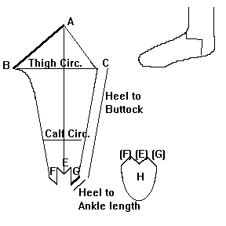
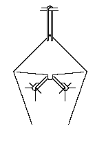
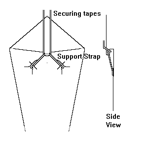
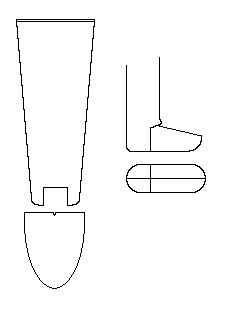

Footed Hose (c13th - 14th Century)
.
This design is based on several pair of hose found at Herjolfsnes, Greenland, as well as those found on the Bocksten "Bog Man" Halmstad, Sweden, as described in some detail in
Nockert. This design is similar, but not identical to the interpretation detailed in Norris.
The leg piece is cut in one piece, on the bias to help with stretching. There is one seam in the rear of the leg starting at the heel, and ending in a point. The triangular gore joins with the rest of the footed section. There is NO separate sole in this design, as the upper and heel are seamed along the axis of the sole.


To keep the hose from sagging around the knees and ankles, a strap of leather is drawn through two holes on each side, and through a central knot designed to cause tension on the rear of the leg. The first diagram shows the most probable form of attaching the hose to the belt, however, from the materials that I have, I don't know that the upper holes required exist. The second diagram shows a less likely method where the central knot is used to lap further securing straps, attached to the belt.
While I have tried both riggings shown here, I am fairly certain that there is something missing regarding the attachment, and have actually found better support in tucking the top point around the belt and using a lace to tie the point to the lower leg. Unfortunately, the actual method for securing them appears to have been lost.

This last view is a hypothtical reconstruction of a hose design from London that is contemporary to the material listed above, as shown in Crowfoot (note: I must point out that this reconstruction is my own interpretation of the materials, and as such, may not entirely correct.
Please also see
"Footed Hose".
Return to
[Middle Ages Index]
[High Middle Ages Index]; or
[Middle Ages - Next], or
[High Middle Ages - Next]
Footwear of the Middle Ages - Historical Shoe Designs/Number 31, by I. Marc Carlson. Copyright 1996
This page is given for the free exchange of information, provided the Author's Name is included in all future revisions, and no money change hands, other than as expressed in the Copyright Page.